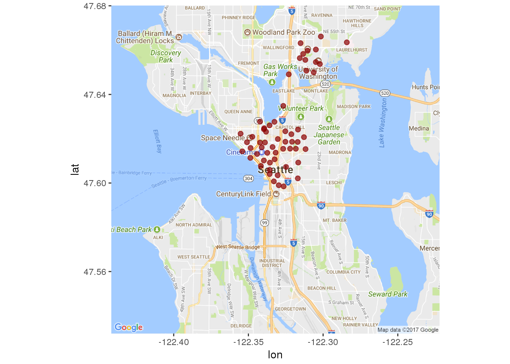
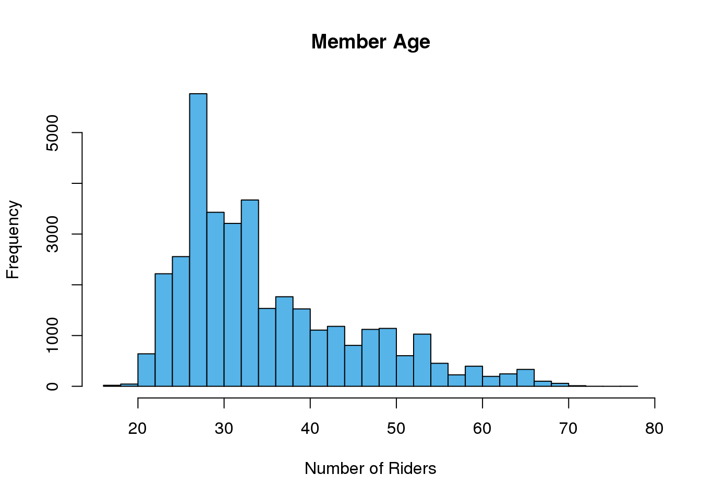

This is an exploration of bicycle-sharing data in the city of Seattle, WA (USA) from October 2014 - August 2016. I hope to eventually combine this data with other forms of ride-sharing and transportation in the city, but this will be the first step.
Time to get started!
# For data manipulation and tidying
library(dplyr)
library(lubridate)
library(tidyr)
# For mapping
library(ggmap)
library(mapproj)
# For data visualizations
library(ggplot2)
# For modeling and machine learning
library(caret)All of the data can be downloaded from the bicycle-sharing service “Pronto!”’s website or from Kaggle. This project contains 3 data sets and I’ll import and inspect each data file independently.
station <- read.csv(file = "2016_station_data.csv", header = TRUE,
stringsAsFactors = FALSE)
trip <- read.csv(file = "2016_trip_data.csv", header = TRUE,
stringsAsFactors = FALSE)
weather <- read.csv(file = "2016_weather_data.csv", header = TRUE,
stringsAsFactors = FALSE)Ok, let’s take a look at each of these data files.
Station
## Observations: 58
## Variables: 9
## $ station_id <chr> "BT-01", "BT-03", "BT-04", "BT-05", "CBD-03"...
## $ name <chr> "3rd Ave & Broad St", "2nd Ave & Vine St", "...
## $ lat <dbl> 47.61842, 47.61583, 47.61609, 47.61311, 47.6...
## $ long <dbl> -122.3510, -122.3486, -122.3411, -122.3442, ...
## $ install_date <chr> "10/13/2014", "10/13/2014", "10/13/2014", "1...
## $ install_dockcount <int> 18, 16, 16, 14, 20, 18, 20, 20, 20, 18, 16, ...
## $ modification_date <chr> "", "", "", "", "", "", "", "11/9/2015", "",...
## $ current_dockcount <int> 18, 16, 16, 14, 20, 18, 20, 18, 20, 18, 0, 1...
## $ decommission_date <chr> "", "", "", "", "", "", "", "", "", "", "8/9...Looks like this dataset is dealing with 9 variables:
Station ID : The individual ID number for a bike station Name : The name of that station ID, also appears to be the rough location of the station Latitude : The latitude of the station Longitude : The longitude of the station Install Date : When that particular station was installed (in MM/DD/YYYY format) Install Dock Count : Number of docks (bike positions) available at each station on installation day Modification Date : When a particular station was modified (in MM/DD/YYYY format) Current Dock Count : Number of docks (bike positions) available at each station on August 31, 2016 Decommission Date : The date that a particular station was put out of service (in MM/DD/YYYY format)
Trip
glimpse(trip)## Observations: 50,793
## Variables: 12
## $ trip_id <int> 431, 432, 433, 434, 435, 436, 437, 438, 439,...
## $ starttime <chr> "10/13/2014 10:31", "10/13/2014 10:32", "10/...
## $ stoptime <chr> "10/13/2014 10:48", "10/13/2014 10:48", "10/...
## $ bikeid <chr> "SEA00298", "SEA00195", "SEA00486", "SEA0033...
## $ tripduration <dbl> 985.935, 926.375, 883.831, 865.937, 923.923,...
## $ from_station_name <chr> "2nd Ave & Spring St", "2nd Ave & Spring St"...
## $ to_station_name <chr> "Occidental Park / Occidental Ave S & S Wash...
## $ from_station_id <chr> "CBD-06", "CBD-06", "CBD-06", "CBD-06", "CBD...
## $ to_station_id <chr> "PS-04", "PS-04", "PS-04", "PS-04", "PS-04",...
## $ usertype <chr> "Member", "Member", "Member", "Member", "Mem...
## $ gender <chr> "Male", "Male", "Female", "Female", "Male", ...
## $ birthyear <int> 1960, 1970, 1988, 1977, 1971, 1974, 1978, 19...Weather
glimpse(weather)## Observations: 689
## Variables: 21
## $ Date <chr> "10/13/2014", "10/14/2014", "10/15/...
## $ Max_Temperature_F <int> 71, 63, 62, 71, 64, 68, 73, 66, 64,...
## $ Mean_Temperature_F <int> 62, 59, 58, 61, 60, 64, 64, 60, 58,...
## $ Min_TemperatureF <int> 54, 55, 54, 52, 57, 59, 55, 55, 55,...
## $ Max_Dew_Point_F <int> 55, 52, 53, 49, 55, 59, 57, 57, 52,...
## $ MeanDew_Point_F <int> 51, 51, 50, 46, 51, 57, 55, 54, 49,...
## $ Min_Dewpoint_F <int> 46, 50, 46, 42, 41, 55, 53, 50, 46,...
## $ Max_Humidity <int> 87, 88, 87, 83, 87, 90, 94, 90, 87,...
## $ Mean_Humidity <int> 68, 78, 77, 61, 72, 83, 74, 78, 70,...
## $ Min_Humidity <int> 46, 63, 67, 36, 46, 68, 52, 67, 58,...
## $ Max_Sea_Level_Pressure_In <dbl> 30.03, 29.84, 29.98, 30.03, 29.83, ...
## $ Mean_Sea_Level_Pressure_In <dbl> 29.79, 29.75, 29.71, 29.95, 29.78, ...
## $ Min_Sea_Level_Pressure_In <dbl> 29.65, 29.54, 29.51, 29.81, 29.73, ...
## $ Max_Visibility_Miles <int> 10, 10, 10, 10, 10, 10, 10, 10, 10,...
## $ Mean_Visibility_Miles <int> 10, 9, 9, 10, 10, 8, 10, 10, 10, 6,...
## $ Min_Visibility_Miles <int> 4, 3, 3, 10, 6, 2, 6, 5, 6, 2, 10, ...
## $ Max_Wind_Speed_MPH <int> 13, 10, 18, 9, 8, 10, 10, 12, 15, 1...
## $ Mean_Wind_Speed_MPH <int> 4, 5, 7, 4, 3, 4, 3, 5, 8, 8, 9, 4,...
## $ Max_Gust_Speed_MPH <chr> "21", "17", "25", "-", "-", "-", "1...
## $ Precipitation_In <dbl> 0.00, 0.11, 0.45, 0.00, 0.14, 0.31,...
## $ Events <chr> "Rain", "Rain", "Rain", "Rain", "Ra...Since the “Stations” dataset was the first one I imported, let’s start with a little exploration there. First of all, how many unique stations are we dealing with?
station %>% summarise(n_distinct(station_id))## n_distinct(station_id)
## 1 58Wow! 58 different stations! Let’s take a quick peek at where they are located.
station_locs <- station %>% group_by(station_id) %>% select(1:4,
-2)# Load the correct map
mymap <- get_map(location = "Seattle", maptype = "roadmap", zoom = 12)## Map from URL : http://maps.googleapis.com/maps/api/staticmap?center=Seattle&zoom=12&size=640x640&scale=2&maptype=roadmap&language=en-EN&sensor=false## Information from URL : http://maps.googleapis.com/maps/api/geocode/json?address=Seattle&sensor=false# Plot a single point for each Station ID
ggmap(mymap) + geom_point(aes(x = long, y = lat), data = station_locs,
alpha = 0.7, color = "darkred", size = 2) So it looks like all of the stations are located near the Lower Queen Anne, Belltown, International District, Capitol Hill and University of Washington areas. Let’s take a more zoomed-in look.
FIX THIS PLOT
ggmap(mymap) + geom_point(aes(x = long, y = lat), data = station_locs,
alpha = 0.7, color = "darkred", size = 2)Great! So the locations are pretty well clustered. I wonder what order they were added in.
First, let’s convert those character-string date objects to actual dates using the lubridate package.
station$install_date <- mdy(station$install_date)# How many times were new stations installed?
station %>% summarise(n_distinct(install_date))## n_distinct(install_date)
## 1 9# How many stations were installed on each date?
station %>% group_by(install_date) %>% summarise(count = n()) %>%
arrange(install_date)## # A tibble: 9 x 2
## install_date count
## <date> <int>
## 1 2014-10-13 50
## 2 2015-05-22 1
## 3 2015-06-12 1
## 4 2015-07-27 1
## 5 2015-09-15 1
## 6 2015-10-29 1
## 7 2016-03-18 1
## 8 2016-07-03 1
## 9 2016-08-09 1It looks like the vast majority (86%) of the stations were added on opening day. Let’s see where those original ones were and where the rest were added.
It’s been a while since we’ve looked at the trip dataset, so let’s take another peek at it here.
## Observations: 50,793
## Variables: 12
## $ trip_id <int> 431, 432, 433, 434, 435, 436, 437, 438, 439,...
## $ starttime <chr> "10/13/2014 10:31", "10/13/2014 10:32", "10/...
## $ stoptime <chr> "10/13/2014 10:48", "10/13/2014 10:48", "10/...
## $ bikeid <chr> "SEA00298", "SEA00195", "SEA00486", "SEA0033...
## $ tripduration <dbl> 985.935, 926.375, 883.831, 865.937, 923.923,...
## $ from_station_name <chr> "2nd Ave & Spring St", "2nd Ave & Spring St"...
## $ to_station_name <chr> "Occidental Park / Occidental Ave S & S Wash...
## $ from_station_id <chr> "CBD-06", "CBD-06", "CBD-06", "CBD-06", "CBD...
## $ to_station_id <chr> "PS-04", "PS-04", "PS-04", "PS-04", "PS-04",...
## $ usertype <chr> "Member", "Member", "Member", "Member", "Mem...
## $ gender <chr> "Male", "Male", "Female", "Female", "Male", ...
## $ birthyear <int> 1960, 1970, 1988, 1977, 1971, 1974, 1978, 19...Great, so there are quite a few things that we can potentially look at using this dataset by itself. Let’s start with the number of trips per day since Pronto! began opening bike stations. To do that, we need to recode our start date/times as POSIXct objects. We’ll use the lubridate package for this.
# Make the start and stop dates into POSIXct objects
trip_2 <- trip %>% mutate(start_dt = mdy_hm(starttime), stop_dt = mdy_hm(stoptime))
# Recode the dates
trip_2 <- trip_2 %>% mutate(start_date = paste(month(start_dt),
day(start_dt), year(start_dt), sep = "/"))
trip_2$start_date <- mdy(trip_2$start_date)
trip_2 <- trip_2 %>% mutate(stop_date = paste(month(stop_dt),
day(stop_dt), year(stop_dt), sep = "/"))
trip_2$stop_date <- mdy(trip_2$stop_date)Great! Time to visualize the number of rides per day.
<
Hmm, grouping by day is a little noisy. Perhaps we should try by month?
First, we need to create a “Year-Month” variable
start_date_ym <- trip_2 %>% mutate(ym = paste(year(start_date),
month(start_date), sep = "/"))Now plot. I think I’ll plot this by month but color it by season (where December, January, and February are “winter”, March, April, and May are “spring”, June, July, August are “summer”, and September, October, November are “autumn”)
<
Well that intuitively makes sense. The number of trips taken per month increases in the spring, reaches a maximum in the summer, declines through the fall, remains fairly stable in the winter and then repeats.
Great! I wonder how the average trip duration fluctuates over this time period.
# Convert Trip Duration from Seconds to Minutes
Trip_Duration_Month <- start_date_ym %>% mutate(trip_duration_min = tripduration/60) %>%
group_by(ym) %>% select(ym, trip_duration_min) %>% summarise(Avg = mean(trip_duration_min),
sd = sd(trip_duration_min)) %>% mutate(se = sd/sqrt(n()))Now to plot the average trip duration (in minutes) (plus or minus standard error), with colors indicating season.
<
There’s surprisingly not a huge range in trip durations here.
The little bit of variation here makes logical sense. Longer trips were being taken in the spring and summer months rather than the fall and winter. It’s also notable that the spring and summer of 2016 may have shown fewer trips than the previous year, show a slight increase in average trip length.
I wonder if people are using this service to commute to/from work. Let’s look at the number of trips by day of the week.
First, let’s create a Day of the Week variable.
trip_2$wd <- wday(trip_2$start_date, label = TRUE)Now to plot the total number of trips by day of the week.
PLOT HERE
Ok, so there are definitely more trips during the week than on the weekends. I wonder if this varies by season too.
PLOT HERE
So it looks like usage is relatively consistent across seasons, at least as far as the number of trips are concerned.
How about time of day? Are people using these around commuting times during the week and later on weekends?
PLOT HERE
Wow, looks like regardless of the season, people are commuting to/from work using this service (there’s a spike between 8 and 10 AM and another between 4 and 7 PM Monday through Friday). But the weekends seem to be popular between 10 AM and 10 PM.
I wonder if different types of members (those who have a membership vs. those that bought a 24 hour or 3 day pass) vary in the number of trips they take.
If I were to guess, I’d think the short-term passes would be ideal for tourists or people looking for a quick weekend trip, whereas members may be more likely to continue using the service year-round. Let’s check out my assumptions by plotting, once again colored by season.
PLOT HERE
Surprisingly (to me, at least), different types of users seem to follow similar patterns of usage. Spring and Summer are definitely the most popular times for anyone to ride a bike in the Seattle area.
While it may seem that the trip duration shouldn’t vary widely by member type, a quick look at Pronto!’s pricing structure may make you reconsider that assumption. You see, while you have to purchase either an annual membership ($85/year), a 24-Hour Pass ($8) or a 3-Day Pass ($16) there is still a cap on the duration of your trip. For members, any ride under 45 minutes is free, but any ride going over 45 minutes will incur a fee of $2 for every additional 30 minutes. For short-term users, any ride under 30 minutes is free, but going over that time limit would cost you an additional $2 for the first 30 minutes and $5 for each additional 30 minutes after that!
Let’s see if these time limits cause differing behaviors in our users.
PLOT HERE
Ok, so our members are pretty good about making sure that they return their bike before they incur extra charges, but the short-term pass holders frequently go over their time limit. I wonder how the cost of a trip varies for members and pass holders. Let’s try to calculate the cost of a trip.
trip_cost <- trip_2 %>% mutate(cost = ifelse(usertype == "Member" &
tripduration_m <= 45, 0, ifelse(usertype == "Member" & tripduration_m >
45 & tripduration_m <= 75, 2, ifelse(usertype == "Member" &
tripduration_m > 75, (2 + 5 * ((tripduration_m - 75)/30)),
ifelse(usertype == "Short-Term Pass Holder" & tripduration_m <=
30, 0, ifelse(usertype == "Short-Term Pass Holder" &
tripduration_m > 30 & tripduration_m < 60, 2, ifelse(usertype ==
"Short-Term Pass Holder" & tripduration_m > 60, (2 +
5 * ((tripduration_m - 60)/30)), "unknown")))))))That was a complicated nested if/else statement! Let’s see how much these folks are paying in additional fees!
PLOT HERE
Looks like short-term pass holders (who are already paying a higher price per day of biking), are also paying lots of extra fees. This could be because they are unfamiliar with the pricing structure and don’t realize they need to return their bike to a station within 30 minutes without getting charged. It is also possible that short-term users may be tourists who don’t know their way around as easily, and thus can’t find their way to a station within the time limit.
We only seem to have age and gender information about people who have an annual Pronto! membership, so we can at least take a look at what types of people use this service.
Let’s look first at age.
trip_2$usertype <- as.factor(trip_2$usertype)
trip_age <- trip_2 %>% mutate(age = year(start_dt) - birthyear)
hist(trip_age$age, main = "Member Age", xlab = "Number of Riders",
col = "#56B4E9", breaks = 25)
PLOT HERE
My first instinct here is to say “Wow! There’s a lot of 20 and 30-somethings that use this service!” But this figure (and these data) may be a little misleading. You see, we don’t have any sort of Rider ID number, meaning we can’t take “individual activity level” into account. So we can’t tell if the tallest spike is because 5 very athletic 28-year-olds went on 4,000 trips each, or if 100 people went on 200 trips each, or if there were 20,000 28-year-olds who each only used the service once.
The same problem would arise if we looked at gender, so I’m just going to move beyond demographics.
Now that I’ve visualized all that I can think of in terms of the “trips” dataset, it’s time to take a brief look at the weather dataset.
Let’s get a quick reminder of what we’re looking at here.
glimpse(weather)## Observations: 689
## Variables: 21
## $ Date <chr> "10/13/2014", "10/14/2014", "10/15/...
## $ Max_Temperature_F <int> 71, 63, 62, 71, 64, 68, 73, 66, 64,...
## $ Mean_Temperature_F <int> 62, 59, 58, 61, 60, 64, 64, 60, 58,...
## $ Min_TemperatureF <int> 54, 55, 54, 52, 57, 59, 55, 55, 55,...
## $ Max_Dew_Point_F <int> 55, 52, 53, 49, 55, 59, 57, 57, 52,...
## $ MeanDew_Point_F <int> 51, 51, 50, 46, 51, 57, 55, 54, 49,...
## $ Min_Dewpoint_F <int> 46, 50, 46, 42, 41, 55, 53, 50, 46,...
## $ Max_Humidity <int> 87, 88, 87, 83, 87, 90, 94, 90, 87,...
## $ Mean_Humidity <int> 68, 78, 77, 61, 72, 83, 74, 78, 70,...
## $ Min_Humidity <int> 46, 63, 67, 36, 46, 68, 52, 67, 58,...
## $ Max_Sea_Level_Pressure_In <dbl> 30.03, 29.84, 29.98, 30.03, 29.83, ...
## $ Mean_Sea_Level_Pressure_In <dbl> 29.79, 29.75, 29.71, 29.95, 29.78, ...
## $ Min_Sea_Level_Pressure_In <dbl> 29.65, 29.54, 29.51, 29.81, 29.73, ...
## $ Max_Visibility_Miles <int> 10, 10, 10, 10, 10, 10, 10, 10, 10,...
## $ Mean_Visibility_Miles <int> 10, 9, 9, 10, 10, 8, 10, 10, 10, 6,...
## $ Min_Visibility_Miles <int> 4, 3, 3, 10, 6, 2, 6, 5, 6, 2, 10, ...
## $ Max_Wind_Speed_MPH <int> 13, 10, 18, 9, 8, 10, 10, 12, 15, 1...
## $ Mean_Wind_Speed_MPH <int> 4, 5, 7, 4, 3, 4, 3, 5, 8, 8, 9, 4,...
## $ Max_Gust_Speed_MPH <chr> "21", "17", "25", "-", "-", "-", "1...
## $ Precipitation_In <dbl> 0.00, 0.11, 0.45, 0.00, 0.14, 0.31,...
## $ Events <chr> "Rain", "Rain", "Rain", "Rain", "Ra...Great, let’s change the Date variable to a POSIXct object, and make the “Events” variable factors.
# Adjusting the Date Variable
weather$Date <- mdy(weather$Date)
# Adjusting the Events Variable
weather$Events <- as.factor(weather$Events)Great. Now how many weather events are there?
levels(weather$Events)## [1] "" "Fog" "Fog , Rain"
## [4] "Fog-Rain" "Rain" "Rain , Snow"
## [7] "Rain , Thunderstorm" "Rain-Snow" "Rain-Thunderstorm"
## [10] "Snow"Wow! So mostly combinations of rain…
Let’s combine a few of these things that seem to represent the same event.